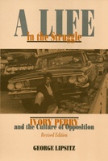

The life story of a grassroots, civil rights activist
The life story of a grassroots, civil rights activist


 The life story of a grassroots, civil rights activist
The life story of a grassroots, civil rights activist

|  |
A Life in the StruggleIvory Perry and the Culture of OppositionRevised EditionGeorge Lipsitzpaper EAN: 978-1-56639-321-8 (ISBN: 1-56639-321-3) |
Eugene Kayden Prize for Best University Press Book, 1989
Anisfield-Wolf Book Award in Race Relations, 1989
"This powerful book tells of Ivory Perry�s choice of a life of protest not in splendid isolation, but in intimate conversation with our world Perry knows and can tell us what it is to be poor and black in America. His story assigns our task."
—William S. McFeely, University of Georgia
This book tells the story of Ivory Perry, a black worker and community activist who, for more than thirty years, has distributed the leaflets, carried the picket signs, and planned and participated in the confrontations that were essential to the success of protest movements. Using oral histories and extensive archival research, George Lipsitz examines the culture of opposition through the events of Perry�s life of commitment and illumines the social and political changes and conflicts that have convulsed the United States during the past fifty years.
Excerpt available at www.temple.edu/tempress
"A very rich history of a rank and file leader of the black movement.... Hopefully it will be a prototype for books that emphasize the fact that social movements put up their own leaders whose qualities of leadership are precisely the same as the values and aspirations of the members of the movement."
—George Rawick, University of Missouri at St. Louis
"More than a simple biography, this compelling portrait tells the ways in which Afro-Americans' long history of a culture of resistance is passed on and reinterpreted in a people�s ongoing struggle against a racist and class-based society. Scholars will find this invaluable text a model work in the tradition of intersecting history, society, and biography."
—Melvin L. Oliver, UCLA
"Those who would understand the changed realities of racial politics in St. Louis and ponder what might lie ahead should not ignore this thoroughly researched, well-written, persuasive book."
—St. Louis Post-Dispatch
"Lipsitz may be the first American historian of radical social protest who gives full range to the psychological complexities of the historical actors, without either scolding or essentially lionizing the chief protagonist. The narrative, which unravels almost like a novel, is both stirring and immensely tragic."
—Mari Jo Buhle, Brown University
Acknowledgments
Introduction: Peace in the Struggle
1. Pine Bluff: The Moral Resources of a Southern Black Community
2. Korea: The Lessons of War
3. St. Louis: Civil Rights and the Industrial City
4. Bogalusa: Civil Rights in a Southern City
5. The War on Poverty: The Emergence of an Organic Intellectual
6. The Rent Strike: Housing Issues and Social Protest
7. Lead Poisoning: Peace and Pain in the Struggle
8. Politics in the Postindustrial City
9. Collective Memory and Social Learning: Deep Like the Rivers
Epilogue
Notes
Interviews and Archives
Index
George Lipsitz is Professor of Ethnic Studies at the University of California, San Diego. The author of six books, he most recently published Rainbow at Midnight: Labor and Culture in the 1940s.
African American Studies
Biography/Memoir/Autobiography
Critical Perspectives on the Past, edited by Susan Porter Benson, Stephen Brier, and Roy Rosenzweig.
Critical Perspectives on the Past, edited by Susan Porter Benson, Stephen Brier, and Roy Rosenzweig, is concerned with the traditional and nontraditional ways in which historical ideas are formed. In its attentiveness to issues of race, class, and gender and to the role of human agency in shaping events, the series is as critical of traditional historical method as content. Emphasizing that history is itself an interpretation of material events, the series demonstrates that the historian's choices of subject, narrative technique, and documentation are politically as well as intellectually constructed.
© 2015 Temple University. All Rights Reserved. This page: http://www.temple.edu/tempress/titles/542_reg.html.